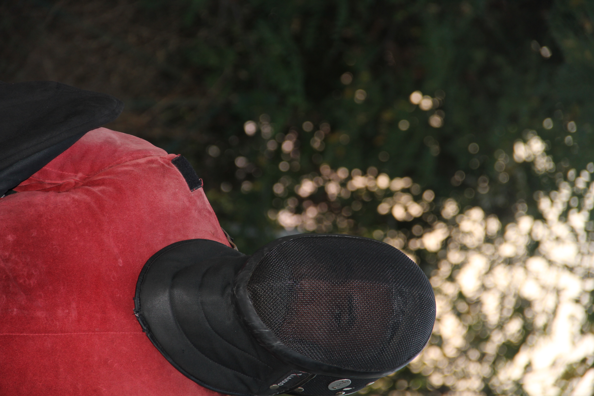

Maestro Fabrizzio Papalia
Direttore Tecnico e Istruttore Nazionale

Qualifica e Ruolo
Direttore Tecnico (Head Coach) dell'Associazione Messina Scherma A.S.D. e Istruttore Nazionale di Fioretto, Spada e Sciabola riconosciuto dalla Federazione Italiana Scherma (F.I.S.), vincitore della borsa di studio dell'Accademia Nazionale di Scherma per il miglior esame della sessione. È inoltre Arbitro Nazionale e Internazionale per Fioretto e Spada.
Palmarès, Esperienza e Incarichi
Ex azzurrino selezionato dalla F.I.S. per i raduni nazionali Under 20 e convocato in ambito internazionale (Coppa del Mondo Città di Como e rappresentativa siciliana Sicilia–U.R.S.S.), vanta il titolo di Campione Italiano Giovanissimi (1984), numerose finali nazionali nelle categorie Ragazzi, Allievi, Cadetti e Giovani, e sette titoli consecutivi di Campione Regionale Assoluto (1984–1990). Ha ricoperto incarichi internazionali come F.I.E. Training Camp Manager per il raduno pre-Mondiali di Catania 2011 a Enna, Rappresentante Tecnico per il Comitato Scherma Sicilia (2004–2008), istruttore nel Regno Unito presso la University of Northumbria (Newcastle) e Durham Fencing, oltre a promuovere progetti scolastici di scherma negli istituti di Messina e provincia.